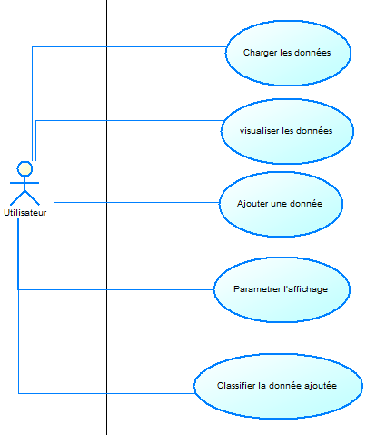

Dossier d'analyse
Équipe
H2 - Roget Benjamin, Bollengier Mathys, Smeeckaert Thomas, Jacquemelle Vincent, Fryson Adrien
Organisation du travail
Benjamin Roget: j'ai contribué à la réalisation du projet via les commits liés à la visualisation des points, à la sélection des catégories, et à l'intégration du modèle observer/observable.
Concernant le dossier d'analyse, j'ai réalisé le diagramme de cas d'utilisation et j'ai participé à la réflexion sur le diagramme de classes.
Mathys Bollengier: J'ai contribué à la réalisation du projet au travers de commits liés à l'ajout d'un point et a sa classification en adéquation avec le cahier des charges.
Pour le dossier d'analyse, j'ai réalisé des fiches descriptives ainsi qu'à la réflexion du diagramme de classe.
Fryson Adrien : Dans le cadre de ce projet, j'ai pris en charge plusieurs aspects. Tout d'abord, j'ai conçu les classes principales du modèle, tout en veillant à créer une arborescence adaptée pour Maven et à configurer correctement le fichier pom.xml pour la gestion des dépendances. Par ailleurs, j'ai élaboré une première version de l'interface FXML en utilisant Scene Builder, en plus de gérer le chargement des données provenant d'un fichier CSV. J'ai également intégré la fonctionnalité permettant de charger un nouveau fichier CSV via l'interface JavaFX.
Concernant le dossier d'analyse, j'ai rédigé les fiches descriptives sur les fonctionnalités "Charger l'ensemble de données" et "Classifier la donnée non classifiée". J'ai également participé à la conception du diagramme de classe.
Vincent Jacquemelle : Dans le cadre de ce projet j'ai imaginé et réalisé la maquette basse fidélité sur figma.
Concernant le dossier d'analyse, j'ai participé à la réflexion sur les différents diagrammes réalisés.
Thomas Smeeckaert : Dans le cadre de ce projet j'ai participé a la conception de l'architecture du programme.
Diagramme de cas d'utilisation

Fiches descriptives
Système : Système de gestion de classification des données
Cas d'utilisation : Charger l'ensemble de données
Acteur principal : Utilisateur
Déclencheur : /
Autres acteurs : /
Préconditions :
/
Garanties en cas de succès :
On peut voir le nuage de points des données qui ont été chargées
Garanties minimales :
Si le chargement échoue, il ne se passe rien
Scénario nominal :
- L'utilisateur sélectionne la fonctionnalité "Charger des données"
- Le système affiche un explorateur de fichier pour sélectionner le fichier.
- L'utilisateur sélectionne le fichier qu'il souhaite charger.
- Le système s'occupe de charger le fichier et choisit des axes par défaut et affiche le nuage de points.
Scénarios alternatifs :
Etape 4 : Si le fichier CSV est incorrect, le système propose de sélectionner un autre fichier
Retour à l'étape 2
Système : Système de gestion de classification des données
Cas d'utilisation : Ajouter un point avec ses données
Acteur principal : Utilisateur
Déclencheur : /
Préconditions : /
Autres acteurs : /
Garanties en cas de succès : Un point est apparu sur le graphique avec les bonnes coordonnées
Garanties minimales : Si les données sont mal ou pas rentrées le point ne se crée pas
Scénario nominal :
- L'utilisateur sélectionne la fonctionnalité "Ajouter un point"
- Le système affiche un formulaire pour rentrer les données
- L'utilisateur saisit les données du point et valide
- Le système vérifie si les données sont correctement rentrées puis affiche le graphique avec le nouveau point bien visible
Scénarios alternatifs :
A. 4(A) Le système renvoie un message d'erreur si les données sont mal saisies
(puis retour 3 scénario nominal)
Système : Système de gestion de classification des données
Cas d'utilisation : Classifier la donnée non classifiée
Acteur principal : Utilisateur
Déclencheur : /
Autres acteurs : /
Préconditions :
L'utilisateur a chargé un fichier CSV
L'utilisateur a saisit un point
Garanties en cas de succès :
On peut savoir a quoi correspond la donnée entrée selon le fichier CSV
Garanties minimales :
Si la classification ne fonctionne pas, rien ne se passe
Scénario nominal :
- L'utilisateur sélectionne la fonctionnalité "Classifier"
- Le système change la couleur du point qui était non classifié en fonction de sa catégorie.
Scénarios alternatifs :
/
Prototypes pour l'interface
Diagramme de classes

Conclusion
Ce dossier d'analyse présente en détail le fonctionnement et la structure de notre projet de système de gestion de classification des données. À travers les différentes fiches descriptives, nous avons décrit les cas d'utilisation principaux, notamment le chargement de données, l'ajout et la classification de points. Nous avons également mis en lumière les scénarios alternatifs, garantissant ainsi une couverture fonctionnelle complète des actions possibles pour l'utilisateur.
Les prototypes d'interface offrent un aperçu de l'expérience utilisateur, en mettant l'accent sur la simplicité d'interaction avec le système, notamment la saisie de données et la classification visuelle. L'architecture sous-jacente, soutenue par le diagramme de classes, démontre la modularité et l'organisation du code, favorisant ainsi la maintenance et l'extension future du projet.
En résumé, ce projet offre une solution robuste et intuitive pour la gestion et la classification des données, avec une interface utilisateur simple et une architecture technique solide. Les prochaines étapes consisteront à affiner l'interface, à intégrer des fonctionnalités avancées, et à implémenter l'algorithme KNN pour povoir classer une donnée.
 L'utilisateur clique sur le bouton ajouter donnée Conforme à l'étape 1 de la fiche descriptive.
L'utilisateur clique sur le bouton ajouter donnée Conforme à l'étape 1 de la fiche descriptive.
 L'interface permet la saisie de chaque champ, Conforme a l'étape 2 de la fiche descriptive.
Une fois saisi l'utilisateur clique sur valider pour ajouter le point. Conforme à l'étape 3 de la fiche descriptive.
L'interface permet la saisie de chaque champ, Conforme a l'étape 2 de la fiche descriptive.
Une fois saisi l'utilisateur clique sur valider pour ajouter le point. Conforme à l'étape 3 de la fiche descriptive.
 On peut voir le nouveaux point ajouté en haut a droite, la couleur noir signifie qu'il n'a pas été classifié. Conforme à l'étape 4 de la fiche descriptive.
On peut voir le nouveaux point ajouté en haut a droite, la couleur noir signifie qu'il n'a pas été classifié. Conforme à l'étape 4 de la fiche descriptive. Pour classifier une donnée, l'utilisateur clique sur le bouton classifier. Conforme à l'étape 1 de la fiche descriptive.
Pour classifier une donnée, l'utilisateur clique sur le bouton classifier. Conforme à l'étape 1 de la fiche descriptive.
 On peut voir que sa couleur a changé, cela signifie que le système a classé le point. Conforme à l'étape 2 de la fiche descriptive.
On peut voir que sa couleur a changé, cela signifie que le système a classé le point. Conforme à l'étape 2 de la fiche descriptive. Une fois la selection terminée, il peut cliquer sur valider. Ici les colonnes sélectionnées sont : petalLength et SepalWidth
Une fois la selection terminée, il peut cliquer sur valider. Ici les colonnes sélectionnées sont : petalLength et SepalWidth
 Le système met à jour la vue selon les paramètres donnés.
Le système met à jour la vue selon les paramètres donnés.